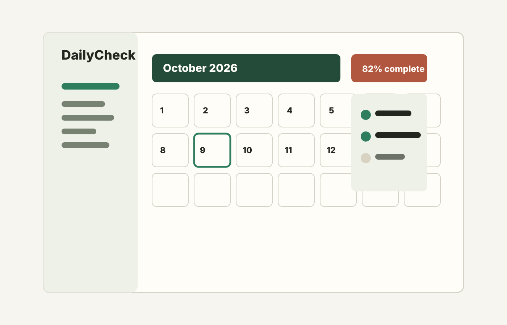

Download
Pick the installer that matches your operating system and CPU architecture.
Version 1.0.0
Your daily tasks, one month at a time.
Download links become active after the first GitHub Release publishes real installer artifacts.

Pick the installer that matches your operating system and CPU architecture.
Use Supabase email and password authentication, then verify this device.
The Windows app checks GitHub Releases and offers updates while keeping your tasks. Production builds require signing; unsigned Mac updates are disabled.
The current stable release keeps checklist tasks and history on your computer. The upcoming cloud-sync preview uploads tasks, notes, and completion history only after you opt in. Connected integrations can read uploaded records; creating tasks requires an additional permission choice. Pausing access retains cloud records.
Publish release notes with each GitHub Release. The desktop app displays those notes before downloading an update.
Get current installers and read what changed in each version.
GitHub Releases and changelog